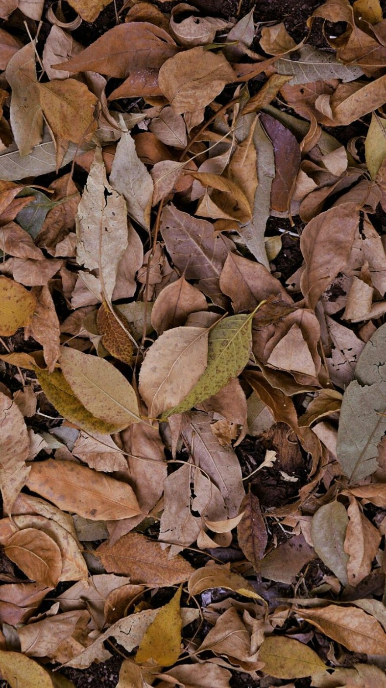

토양 단면
땅을 1 m 파 내려가면 보이는 다섯 층의 깊이 · 색 · 뿌리 · 물빠짐을 층마다 정리했습니다.
층 고르기
O · 낙엽 · 부식층
- 깊이
- 0~3 cm
- 색
- 검정에 가까운 흑갈색 · 10YR 2/1
- 뿌리
- 잔뿌리 매우 많음
- 물빠짐
- 빠름
- 구조
- 덜 썩은 잎과 줄기가 겹으로 쌓임
숲 바닥에서 볼 수 있는 층입니다. 갈아엎는 밭과 논에는 대부분 없습니다.
A · 표토
- 깊이
- 3~25 cm
- 색
- 짙은 회갈색 · 10YR 3/2
- 뿌리
- 많음
- 물빠짐
- 보통
- 구조
- 알갱이가 뭉친 입단 구조
뿌리가 가장 많이 퍼지고 유기물이 쌓이는 층입니다. 검정 시료는 이 층에서 뜹니다.
B · 심토
- 깊이
- 25~60 cm
- 색
- 밝은 적갈색 · 7.5YR 5/6
- 뿌리
- 적음
- 물빠짐
- 느림
- 구조
- 모난 덩어리 구조, 점토 막
위에서 씻겨 내려온 점토와 철이 쌓이는 층입니다. 과수 시료는 20~40 cm에서 떠 이 층 윗부분이 섞입니다.
C · 모재층
- 깊이
- 60~95 cm
- 색
- 연한 황갈색 · 10YR 7/4
- 뿌리
- 거의 없음
- 물빠짐
- 보통
- 구조
- 풍화된 바위 조각, 구조 없음
흙이 되기 전의 풍화 물질입니다. 손으로 부수면 모래와 돌 부스러기로 갈라집니다.
R · 암반
- 깊이
- 95~100 cm 아래
- 색
- 회색 화강암
- 뿌리
- 없음
- 물빠짐
- 막힘
- 구조
- 굳은 바위
삽이 들어가지 않는 바닥입니다. 물이 고이면 그 위 층에 회색 얼룩이 생깁니다.
단면 사진
층 경계는 색과 뿌리 양이 바뀌는 자리로 정합니다. 사진의 경계는 지역마다 깊이가 다릅니다.
